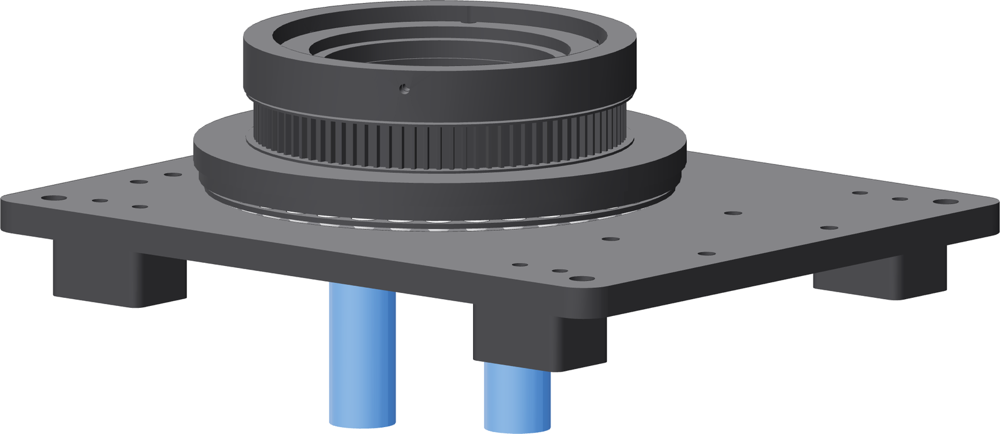

Prove the service path
A Ø90 mm passage runs all the way through the nest, turntable, spool and base. Check now that a 25.4 mm envelope clears at both port positions, while it is still a plate and four feet.

- Take a 25.4 mm round bar, a deep socket, or anything of that diameter and about 150 mm long.
- Pass it up through the base's service opening from below, at a radius of about 30 mm from the axis.
- Walk it round to the other port position, 180° away, and pass it again.
- Look under the fixture. There must be clear air from the bench to the passage at both positions.
Neither the base nor the spool obstructs the probe at either port position. If it fouls, find out now. When the second closure is on the table there is a welded vessel sitting on the nest and a purge hose already connected to one lower port, and this is not a thing you can discover then.
The first closure back-purges through the open held end. The second cannot — that end is welded shut. So the purge goes in through one port of the completed lower plate and out through the other, both of them reached through this passage from underneath.